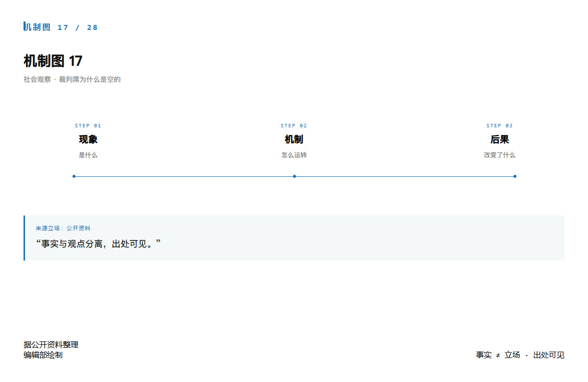

同一件事，两种口径，互相喂养
社会观察 · 裁判席为什么是空的
一条热搜下面，往往有两拨人在说话。一拨在说「他是什么人」，一拨在说「这事按规矩怎么算」。
下面用彩礼案做样本，材料来自公开传播内容。连麦是单方陈述，未经另一方证实；这里并置两种口径的结构，不裁决个案是非，也不转述具体指控。
这和你有关系。下次再遇到刷屏的事，你会发现自己也在两个频道之间来回跳：先想骂谁，再想按规矩该怎么办。看清这个跳法，比选边有用。
口径 A 以单方口述为核心，经情感动员放大，抢先定义「发生了什么」。载体是连麦、长文、切片，传播即时、互动高，给的是定性：谁负心、谁该被谴责。口径 B 以法律关系和证据为核心，载体是科普、解读、条文，传播滞后、互动低，给的是分类：赠与还是彩礼，举证责任在谁。
两条口径不必然矛盾。A 讲「她经历了什么」，B 讲「法律怎么分类」，可以并存。可传播系统只让 A 活着。B 每次出场都在回答一个没人问的问题：先别管法律，你就说他是不是人？B 一开口，就输掉了提问权。
样本里，A 的轨迹：连麦自述、情绪共鸣、话题发酵、道德定性完成，24 小时内跑完。B 的轨迹是：彩礼与赠与的区分、返还的法定情形、举证责任，可传播量和互动量始终是 A 的零头。每当 B 出场，评论区的标准回应是那句「这时候还讲法律？」
最值得看的是另一层：那个连麦里，同一个人的说法在 28 分钟内改了四次，责任的主语从「他」挪到了「我」。这不是用来判断对错的，是一个可以核对的刻度——说明说出定性的人，自己也在被叙事推着走。叙事机器没有作者，所有人都是演员。
并排放完，最深一层出来。A 每次情绪爆发，都给 B 送去「你看，舆论又在乱来」的素材，B 的愤怒和自嘲跟着升级；B 每次那句「这时候还讲法律」，又给 A 送去「他们冷血、他们洗地」的素材，A 的道德动员更有劲。两个阵营在对方身上找到了自己存在的理由。
有个关键的不对称。A 的互激收益是流量：情绪升级、互动升级、分发升级。B 的互激收益只有正确感：我说的对，但没人听。收益不对称决定了终点——B 的持有者要么退场，要么改用 A 的武器作战。那份冷静的、分类的、不讨喜的程序理性，从公共语料里消失。
并置最大的价值，不是裁决 A 和 B 谁真，而是让你看见裁判席是空的。公共场域里没有一个机制在做对齐作业：把 A 的事实主张和 B 的分类框架摆到一起核对。原因朴素：对齐作业没有互动量。没人看的东西，就不会被生产。
还得对称一次。A 恰好在女性一方，这不意味着 A 永远属于哪个性别。换一个样本，A 和 B 的持方会整个换位。方法跟着结构走，不跟着性别走。谁把它当成单向指控的工具，谁就用错了。
下次遇到刷屏的事，别急着选边。花三分钟，把「情绪定性的那条」和「程序分类的那条」各写一行，并排看。看完你会发现，两行话在不同层面上说话，它们可以并存，却被传播系统逼成了对手。
并置之后再决定说不说话。并置完通常就不那么想选边了——这正是目的。你改变不了规则，但能拒绝被规则牵着跑。这就是这套拆解能给的出口：先看清两行字，再决定要不要开口。
📌 一个值得记住的判断
并置不是和稀泥，是让结构显形。真正的空缺不是哪一方说得不对，是没人负责把两条口径对齐。
编辑部综述 · 双口径对照法
「并置不是和稀泥，是让结构显形。」
对照的目的不是折中，是把那个空着的裁判席照出来。

▲ 两条口径的互激结构（编辑部绘制）
✍️ 你平时是哪一拨？
先问「他是什么人」的，还是先问「按规矩怎么算」的？评论区说说。觉得有用，点个赞、点个「在看」，转给也会刷到这类热点的人。
下一篇：28 分钟连麦，27 条原话，看一句「他不负责任」怎么走到「是我害了他」。
资料来源
公开传播内容与既有拆解：《2026.11.11 · 28.8 万彩礼谈崩》，含 27 条逐字引语的原声实录附页；连麦为单方陈述，未经另一方证实。
原始材料另附法律科普五条边界，与站队无关，只与边界有关；态度转变的归因不裁决，只采「刻度在移动」这一可核对事实。
「口径 A/B」「互激结构」「裁判席是空的」为这套拆解的分析性概念，不是事实认定。
社会观察，不站任何性别立场。连麦为单方陈述，未经另一方证实；态度转变归因不裁决。拆解是为了理解，不是行动指南。